pacman::p_load(sf, spdep, tmap, tidyverse, knitr)Hands-on Exercise 4: Spatial Weights and Applications
Overview
Every measure of spatial association, from Moran’s I and Geary’s C to the local indicators that follow in later exercises, rests on a prior decision that is rarely stated explicitly: which areas count as neighbours of which. That decision is encoded in a spatial weights matrix, an n × n object whose entry wij records how strongly area i is linked to area j. The matrix is not given by the data; it is constructed, and the construction is a modelling choice.
This exercise builds that matrix four different ways for the 88 counties of Hunan province, then puts it to work by computing spatially lagged versions of a development indicator. By the end of it the following are in place:
- geospatial data imported with the appropriate functions of sf,
- an attribute table imported with readr and attached by a relational join with dplyr,
- spatial weights computed with the appropriate functions of spdep, and
- spatially lagged variables calculated with spdep.
The Study Area and Data
Two data sets are used:
| Dataset | Description |
|---|---|
Hunan |
County boundary layer of Hunan province, China, in ESRI shapefile format |
Hunan_2012.csv |
Selected local development indicators for Hunan in 2012 |
NoteWhere this copy of the data came from
The textbook distributes these two files inside the course data archive, which is not retrievable from a script. The same pair was taken instead from a public course repository, and the import below confirms they are the textbook’s own files rather than a reconstruction: 88 polygons, seven attribute fields, a bounding box of 108.7831–114.2544 E by 24.6342–30.1281 N, and geodetic CRS WGS 84, all identical to the figures printed in the chapter. Every number produced in this document therefore matches the textbook’s, which is not the case for Hands-on Exercise 3, where the source data had to be rebuilt.
Getting Started
Five packages are used:
| Package | Role |
|---|---|
| sf | Importing and handling geospatial data |
| spdep | Building neighbour lists and spatial weights, and computing spatial lags |
| tmap | Cartographic quality thematic maps |
| tidyverse | Data import, transformation and wrangling |
| knitr | kable() for the comparison tables in the final section |
Getting the Data Into R Environment
The geospatial data arrives as an ESRI shapefile and the attribute table as a csv. They are brought in separately and then joined on the county name.
Import shapefile into R environment
st_read() of sf imports the Hunan shapefile. The result is a simple feature object:
hunan <- st_read(dsn = "data/geospatial",
layer = "Hunan")Reading layer `Hunan' from data source
`C:\Users\Imgigi\Desktop\629\hand-on-ex\hand-on-ex4\data\geospatial'
using driver `ESRI Shapefile'
Simple feature collection with 88 features and 7 fields
Geometry type: POLYGON
Dimension: XY
Bounding box: xmin: 108.7831 ymin: 24.6342 xmax: 114.2544 ymax: 30.12812
Geodetic CRS: WGS 84The header reports 88 polygon features with seven attribute fields, in geographic coordinates on WGS 84. The coordinates are left unprojected: the spdep functions used below accept longitude–latitude input directly and compute great circle distances in kilometres when asked to, so no reprojection is required.
Import csv file into R environment
read_csv() of readr imports the indicator table. The output is a plain data frame with no geometry:
hunan2012 <- read_csv("data/aspatial/Hunan_2012.csv")Performing relational join
left_join() of dplyr attaches the indicator fields to the attribute table of the hunan simple feature object. Both tables carry a County field, so that is the join key. select() then keeps only the identifying fields and GDPPC, gross domestic product per capita, which is the variable carried through the rest of the exercise:
hunan <- left_join(hunan, hunan2012, by = "County") %>%
select(1:4, 7, 15)The join is written with an explicit by = rather than left to automatic matching, so the key is visible in the document rather than reported in a message. The order of the join matters: hunan comes first, which keeps the result an sf object with its geometry column intact.
Visualising Regional Development Indicator
Before any weights are built, a basemap of county names and a choropleth of GDPPC give a sense of what the province looks like and where its wealth sits:
basemap <- tm_shape(hunan) +
tm_polygons() +
tm_text("NAME_3", size = 0.4)
gdppc <- qtm(hunan, "GDPPC") +
tm_layout(legend.position = tm_pos_in("left", "bottom"))
tmap_arrange(basemap, gdppc, asp = 1, ncol = 2)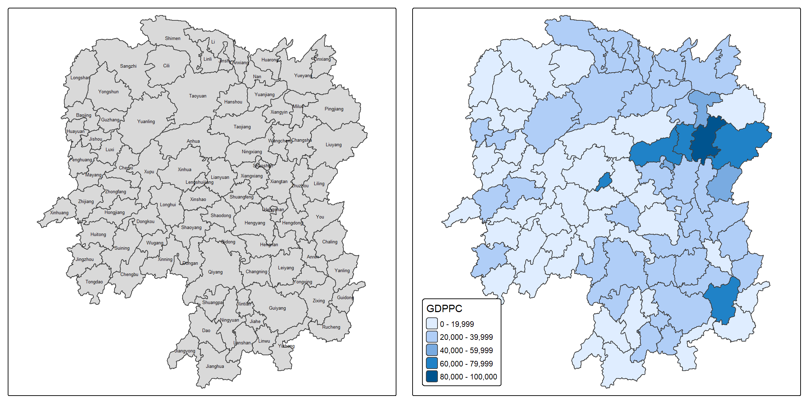
GDPPC is concentrated in the north-east, around Changsha and its neighbours. Whether that concentration amounts to spatial clustering is precisely the question a weights matrix is needed to answer.
Computing Contiguity Spatial Weights
poly2nb() of spdep builds a neighbours list from regions with contiguous boundaries. Its queen argument takes TRUE or FALSE; the default is TRUE, so omitting it returns first order neighbours under the Queen criterion.
The two criteria differ in what counts as contact. Under the Rook criterion two counties are neighbours only if their boundaries share a line segment. Under the Queen criterion a single shared point is enough, so counties meeting only at a corner are also counted.
Computing (QUEEN) contiguity based neighbours
wm_q <- poly2nb(hunan, queen = TRUE)
summary(wm_q)Neighbour list object:
Number of regions: 88
Number of nonzero links: 448
Percentage nonzero weights: 5.785124
Average number of links: 5.090909
Link number distribution:
1 2 3 4 5 6 7 8 9 11
2 2 12 16 24 14 11 4 2 1
2 least connected regions:
30 65 with 1 link
1 most connected region:
85 with 11 linksThe summary reports 88 area units. The most connected has 11 neighbours; two units have a single neighbour each. The average of 5.09 links is the baseline against which every other criterion below is measured.
For each polygon wm_q lists all neighbouring polygons. The neighbours of the first polygon are:
wm_q[[1]][1] 2 3 4 57 85Polygon 1 has five neighbours. The numbers are the polygon IDs as stored in the hunan object, which are row positions rather than county identifiers. The name behind ID 1 is recovered with:
hunan$County[1][1] "Anxiang"Polygon ID 1 is Anxiang county. The names of its five neighbours follow from the same indexing:
hunan$NAME_3[c(2, 3, 4, 57, 85)][1] "Hanshou" "Jinshi" "Li" "Nan" "Taoyuan"And their GDPPC values:
nb1 <- wm_q[[1]]
nb1 <- hunan$GDPPC[nb1]
nb1[1] 20981 34592 24473 21311 22879The five Queen neighbours of Anxiang have GDPPC of 20981, 34592, 24473, 21311 and 22879 respectively. These five numbers reappear in the final section, where their weighted average becomes the spatial lag of Anxiang.
The complete neighbour list is displayed with str(). The output runs to 88 entries, so it is folded away here:
NoteThe full Queen neighbour list
str(wm_q)List of 88
$ : int [1:5] 2 3 4 57 85
$ : int [1:5] 1 57 58 78 85
$ : int [1:4] 1 4 5 85
$ : int [1:4] 1 3 5 6
$ : int [1:4] 3 4 6 85
$ : int [1:5] 4 5 69 75 85
$ : int [1:4] 67 71 74 84
$ : int [1:7] 9 46 47 56 78 80 86
$ : int [1:6] 8 66 68 78 84 86
$ : int [1:8] 16 17 19 20 22 70 72 73
$ : int [1:3] 14 17 72
$ : int [1:5] 13 60 61 63 83
$ : int [1:4] 12 15 60 83
$ : int [1:3] 11 15 17
$ : int [1:4] 13 14 17 83
$ : int [1:5] 10 17 22 72 83
$ : int [1:7] 10 11 14 15 16 72 83
$ : int [1:5] 20 22 23 77 83
$ : int [1:6] 10 20 21 73 74 86
$ : int [1:7] 10 18 19 21 22 23 82
$ : int [1:5] 19 20 35 82 86
$ : int [1:5] 10 16 18 20 83
$ : int [1:7] 18 20 38 41 77 79 82
$ : int [1:5] 25 28 31 32 54
$ : int [1:5] 24 28 31 33 81
$ : int [1:4] 27 33 42 81
$ : int [1:3] 26 29 42
$ : int [1:5] 24 25 33 49 54
$ : int [1:3] 27 37 42
$ : int 33
$ : int [1:8] 24 25 32 36 39 40 56 81
$ : int [1:8] 24 31 50 54 55 56 75 85
$ : int [1:5] 25 26 28 30 81
$ : int [1:3] 36 45 80
$ : int [1:6] 21 41 47 80 82 86
$ : int [1:6] 31 34 40 45 56 80
$ : int [1:4] 29 42 43 44
$ : int [1:4] 23 44 77 79
$ : int [1:5] 31 40 42 43 81
$ : int [1:6] 31 36 39 43 45 79
$ : int [1:6] 23 35 45 79 80 82
$ : int [1:7] 26 27 29 37 39 43 81
$ : int [1:6] 37 39 40 42 44 79
$ : int [1:4] 37 38 43 79
$ : int [1:6] 34 36 40 41 79 80
$ : int [1:3] 8 47 86
$ : int [1:5] 8 35 46 80 86
$ : int [1:5] 50 51 52 53 55
$ : int [1:4] 28 51 52 54
$ : int [1:5] 32 48 52 54 55
$ : int [1:3] 48 49 52
$ : int [1:5] 48 49 50 51 54
$ : int [1:3] 48 55 75
$ : int [1:6] 24 28 32 49 50 52
$ : int [1:5] 32 48 50 53 75
$ : int [1:7] 8 31 32 36 78 80 85
$ : int [1:6] 1 2 58 64 76 85
$ : int [1:5] 2 57 68 76 78
$ : int [1:4] 60 61 87 88
$ : int [1:4] 12 13 59 61
$ : int [1:7] 12 59 60 62 63 77 87
$ : int [1:3] 61 77 87
$ : int [1:4] 12 61 77 83
$ : int [1:2] 57 76
$ : int 76
$ : int [1:5] 9 67 68 76 84
$ : int [1:4] 7 66 76 84
$ : int [1:5] 9 58 66 76 78
$ : int [1:3] 6 75 85
$ : int [1:3] 10 72 73
$ : int [1:3] 7 73 74
$ : int [1:5] 10 11 16 17 70
$ : int [1:5] 10 19 70 71 74
$ : int [1:6] 7 19 71 73 84 86
$ : int [1:6] 6 32 53 55 69 85
$ : int [1:7] 57 58 64 65 66 67 68
$ : int [1:7] 18 23 38 61 62 63 83
$ : int [1:7] 2 8 9 56 58 68 85
$ : int [1:7] 23 38 40 41 43 44 45
$ : int [1:8] 8 34 35 36 41 45 47 56
$ : int [1:6] 25 26 31 33 39 42
$ : int [1:5] 20 21 23 35 41
$ : int [1:9] 12 13 15 16 17 18 22 63 77
$ : int [1:6] 7 9 66 67 74 86
$ : int [1:11] 1 2 3 5 6 32 56 57 69 75 ...
$ : int [1:9] 8 9 19 21 35 46 47 74 84
$ : int [1:4] 59 61 62 88
$ : int [1:2] 59 87
- attr(*, "class")= chr "nb"
- attr(*, "region.id")= chr [1:88] "1" "2" "3" "4" ...
- attr(*, "call")= language poly2nb(pl = hunan, queen = TRUE)
- attr(*, "type")= chr "queen"
- attr(*, "snap")= num 9e-08
- attr(*, "sym")= logi TRUE
- attr(*, "ncomp")=List of 2
..$ nc : num 1
..$ comp.id: num [1:88] 1 1 1 1 1 1 1 1 1 1 ...Creating (ROOK) contiguity based neighbours
The same function with queen = FALSE applies the Rook criterion:
wm_r <- poly2nb(hunan, queen = FALSE)
summary(wm_r)Neighbour list object:
Number of regions: 88
Number of nonzero links: 440
Percentage nonzero weights: 5.681818
Average number of links: 5
Link number distribution:
1 2 3 4 5 6 7 8 9 10
2 2 12 20 21 14 11 3 2 1
2 least connected regions:
30 65 with 1 link
1 most connected region:
85 with 10 linksEight links are lost, 440 against 448, and the average number of links falls from 5.09 to 5.00. Those eight are the corner touches that the Queen criterion admits and the Rook criterion rejects. The most connected unit drops from 11 neighbours to 10, and the same two units remain with one neighbour each. For irregular administrative polygons of this kind the two criteria rarely diverge much, since exact corner contacts are uncommon; the difference is far more consequential on a regular grid.
Visualising contiguity weights
A connectivity graph takes a point and draws a line to each neighbouring point. The units here are polygons, so points have to be derived before the graph can be drawn, and the usual choice is the polygon centroid.
The coordinates are needed as a plain matrix rather than as an sf geometry, which rules out running st_centroid() on the object as a whole. Instead the function is mapped over the geometry column one feature at a time. map_dbl() of purrr applies a given function to each element of a vector and returns a vector of the same length, so mapping st_centroid() over the geometry column and taking the first element of each result gives the longitudes:
longitude <- map_dbl(hunan$geometry, ~st_centroid(.x)[[1]])Latitude is obtained the same way, with the second element of each centroid instead of the first:
latitude <- map_dbl(hunan$geometry, ~st_centroid(.x)[[2]])cbind() puts the two into a single object:
coords <- cbind(longitude, latitude)The first few rows confirm the format, a two column matrix in the order expected by the spdep plotting and distance functions:
head(coords) longitude latitude
[1,] 112.1531 29.44362
[2,] 112.0372 28.86489
[3,] 111.8917 29.47107
[4,] 111.7031 29.74499
[5,] 111.6138 29.49258
[6,] 111.0341 29.79863Plotting Queen contiguity based neighbours map
plot(hunan$geometry, border = "lightgrey")
plot(wm_q, coords, pch = 19, cex = 0.6, add = TRUE, col = "red")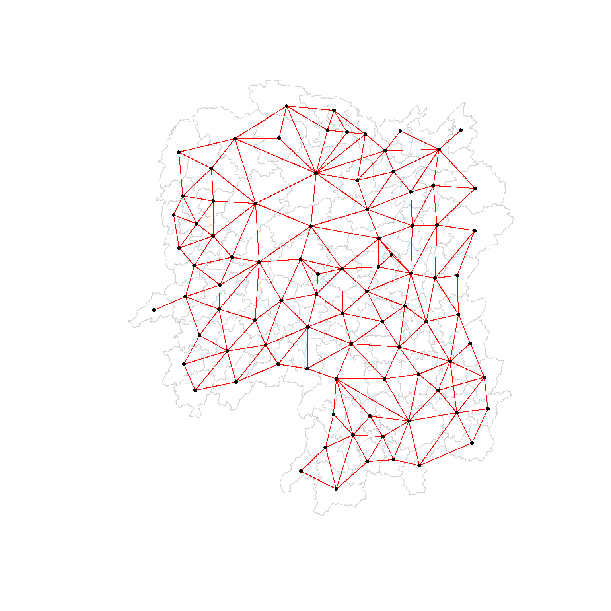
Plotting Rook contiguity based neighbours map
plot(hunan$geometry, border = "lightgrey")
plot(wm_r, coords, pch = 19, cex = 0.6, add = TRUE, col = "red")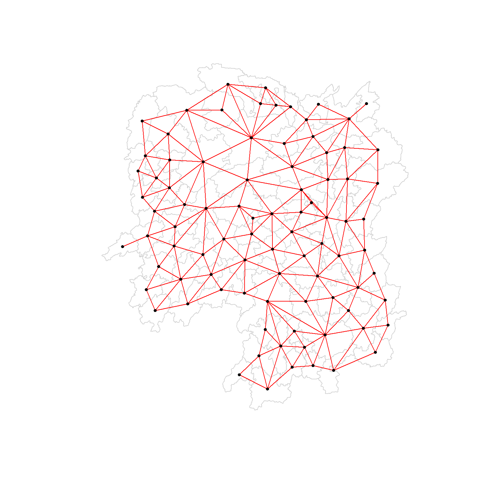
Plotting both Queen and Rook contiguity based neighbours maps
Side by side, the eight extra Queen links are easier to find than in either map alone:
par(mfrow = c(1, 2))
plot(hunan$geometry, border = "lightgrey", main = "Queen Contiguity")
plot(wm_q, coords, pch = 19, cex = 0.6, add = TRUE, col = "red")
plot(hunan$geometry, border = "lightgrey", main = "Rook Contiguity")
plot(wm_r, coords, pch = 19, cex = 0.6, add = TRUE, col = "red")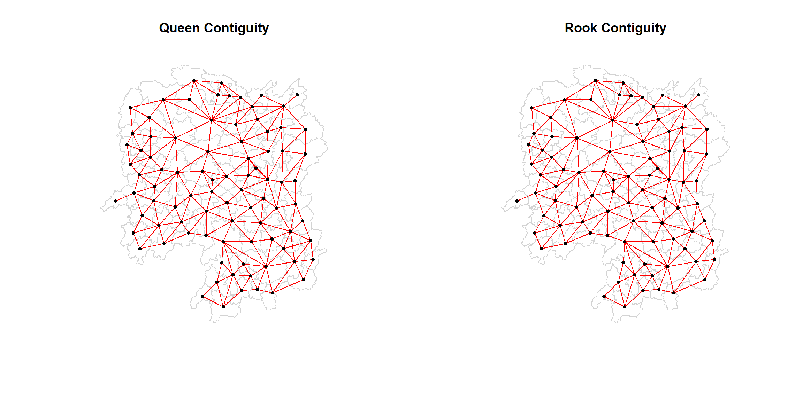
Both graphs are fully connected, meaning every county is reachable from every other, which is what the absence of isolated units in the two summaries already implied.
Computing distance based neighbours
Contiguity is not the only way to define a neighbour. dnearneigh() of spdep identifies neighbours of region points by Euclidean distance, within a band whose lower and upper bounds are set by d1= and d2=. If the coordinates are unprojected and longlat = TRUE is passed, great circle distances in kilometres are calculated on the WGS 84 reference ellipsoid, which is the case here, since coords holds longitude and latitude.
Determine the cut-off distance
The upper limit of the distance band has to be chosen rather than assumed. A defensible choice is the smallest radius at which no county is left without a neighbour, and that is found in four steps:
knearneigh()of spdep returns a matrix of the indices of the k nearest neighbours of each point,knn2nb()converts that object into a neighbours list of classnb,nbdists()returns the lengths of the neighbour relationship edges, in the units of the coordinates if projected and in kilometres otherwise, andunlist()removes the list structure so the lengths can be summarised.
k1 <- knn2nb(knearneigh(coords))
k1dists <- unlist(nbdists(k1, coords, longlat = TRUE))
summary(k1dists) Min. 1st Qu. Median Mean 3rd Qu. Max.
24.79 32.57 38.01 39.07 44.52 61.79 The largest first nearest neighbour distance is 61.79 km. Using that as the upper threshold guarantees that every unit has at least one neighbour, since by construction each county’s single closest neighbour lies within it.
NoteWhat the k = 1 graph is, and what it is not
knearneigh(coords) with no k returns the single nearest neighbour of each county, and spdep notes that the resulting object has 25 sub-graphs. This is expected and is not a defect in the data: linking every point only to its closest partner produces mutual pairs and short chains rather than one connected network, which is why the k = 1 graph is used here purely as a ruler for distances and never as a weights matrix in its own right.
Computing fixed distance weight matrix
With the threshold settled, the distance weight matrix is computed:
wm_d62 <- dnearneigh(coords, 0, 62, longlat = TRUE)
wm_d62Neighbour list object:
Number of regions: 88
Number of nonzero links: 324
Percentage nonzero weights: 4.183884
Average number of links: 3.681818 The average number of links is 3.68, meaning that across the province each county has on average 3.68 other counties whose centroids lie within 62 km of its own. That is well below the 5.09 of the Queen criterion, and the gap is informative: a fixed radius that is generous enough to reach the most isolated county is still not generous enough to reproduce contiguity everywhere, because Hunan’s counties vary considerably in size.
The contents of the matrix are displayed with str():
NoteThe full fixed distance neighbour list
str(wm_d62)List of 88
$ : int [1:5] 3 4 5 57 64
$ : int [1:4] 57 58 78 85
$ : int [1:4] 1 4 5 57
$ : int [1:3] 1 3 5
$ : int [1:4] 1 3 4 85
$ : int 69
$ : int [1:2] 67 84
$ : int [1:4] 9 46 47 78
$ : int [1:4] 8 46 68 84
$ : int [1:4] 16 22 70 72
$ : int [1:3] 14 17 72
$ : int [1:5] 13 60 61 63 83
$ : int [1:4] 12 15 60 83
$ : int [1:2] 11 17
$ : int 13
$ : int [1:4] 10 17 22 83
$ : int [1:3] 11 14 16
$ : int [1:3] 20 22 63
$ : int [1:5] 20 21 73 74 82
$ : int [1:5] 18 19 21 22 82
$ : int [1:6] 19 20 35 74 82 86
$ : int [1:4] 10 16 18 20
$ : int [1:3] 41 77 82
$ : int [1:4] 25 28 31 54
$ : int [1:4] 24 28 33 81
$ : int [1:4] 27 33 42 81
$ : int [1:2] 26 29
$ : int [1:6] 24 25 33 49 52 54
$ : int [1:2] 27 37
$ : int 33
$ : int [1:2] 24 36
$ : int 50
$ : int [1:5] 25 26 28 30 81
$ : int [1:3] 36 45 80
$ : int [1:6] 21 41 46 47 80 82
$ : int [1:5] 31 34 45 56 80
$ : int [1:2] 29 42
$ : int [1:3] 44 77 79
$ : int [1:4] 40 42 43 81
$ : int [1:3] 39 45 79
$ : int [1:5] 23 35 45 79 82
$ : int [1:5] 26 37 39 43 81
$ : int [1:3] 39 42 44
$ : int [1:2] 38 43
$ : int [1:6] 34 36 40 41 79 80
$ : int [1:5] 8 9 35 47 86
$ : int [1:5] 8 35 46 80 86
$ : int [1:5] 50 51 52 53 55
$ : int [1:4] 28 51 52 54
$ : int [1:6] 32 48 51 52 54 55
$ : int [1:4] 48 49 50 52
$ : int [1:6] 28 48 49 50 51 54
$ : int [1:2] 48 55
$ : int [1:5] 24 28 49 50 52
$ : int [1:4] 48 50 53 75
$ : int 36
$ : int [1:5] 1 2 3 58 64
$ : int [1:5] 2 57 64 66 68
$ : int [1:3] 60 87 88
$ : int [1:4] 12 13 59 61
$ : int [1:5] 12 60 62 63 87
$ : int [1:4] 61 63 77 87
$ : int [1:5] 12 18 61 62 83
$ : int [1:4] 1 57 58 76
$ : int 76
$ : int [1:5] 58 67 68 76 84
$ : int [1:2] 7 66
$ : int [1:4] 9 58 66 84
$ : int [1:2] 6 75
$ : int [1:3] 10 72 73
$ : int [1:2] 73 74
$ : int [1:3] 10 11 70
$ : int [1:4] 19 70 71 74
$ : int [1:5] 19 21 71 73 86
$ : int [1:2] 55 69
$ : int [1:3] 64 65 66
$ : int [1:3] 23 38 62
$ : int [1:2] 2 8
$ : int [1:4] 38 40 41 45
$ : int [1:5] 34 35 36 45 47
$ : int [1:5] 25 26 33 39 42
$ : int [1:6] 19 20 21 23 35 41
$ : int [1:4] 12 13 16 63
$ : int [1:4] 7 9 66 68
$ : int [1:2] 2 5
$ : int [1:4] 21 46 47 74
$ : int [1:4] 59 61 62 88
$ : int [1:2] 59 87
- attr(*, "class")= chr "nb"
- attr(*, "region.id")= chr [1:88] "1" "2" "3" "4" ...
- attr(*, "call")= language dnearneigh(x = coords, d1 = 0, d2 = 62, longlat = TRUE)
- attr(*, "dnn")= num [1:2] 0 62
- attr(*, "bounds")= chr [1:2] "GE" "LE"
- attr(*, "nbtype")= chr "distance"
- attr(*, "sym")= logi TRUE
- attr(*, "ncomp")=List of 2
..$ nc : num 1
..$ comp.id: num [1:88] 1 1 1 1 1 1 1 1 1 1 ...Plotting fixed distance weight matrix
Plotting the first nearest neighbour links in red over the 62 km links in black shows the two structures together:
plot(hunan$geometry, border = "lightgrey")
plot(wm_d62, coords, add = TRUE)
plot(k1, coords, add = TRUE, col = "red", length = 0.08)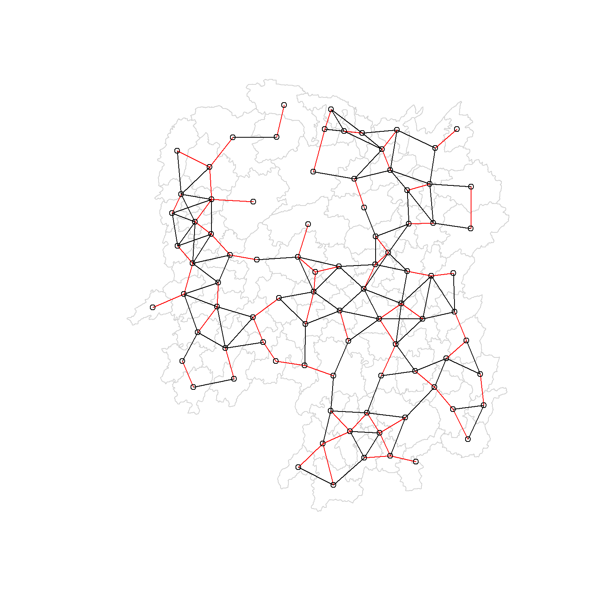
The red lines are the links to first nearest neighbours and the black lines the links to neighbours within the 62 km cut-off. Every red line is also a black line, which is the graphical statement of the guarantee built into the threshold.
The same two graphs can also be placed next to each other:
par(mfrow = c(1, 2))
plot(hunan$geometry, border = "lightgrey", main = "1st nearest neighbours")
plot(k1, coords, add = TRUE, col = "red", length = 0.08)
plot(hunan$geometry, border = "lightgrey", main = "Distance link")
plot(wm_d62, coords, add = TRUE, pch = 19, cex = 0.6)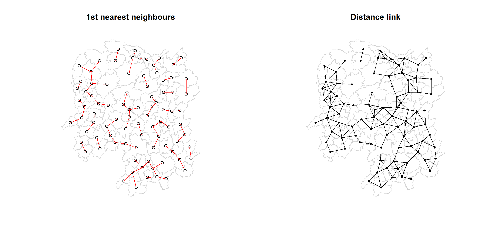
Computing adaptive distance weight matrix
A fixed distance weight matrix has a characteristic consequence: densely settled areas, usually urban, tend to have many neighbours, while sparsely settled areas, usually rural, tend to have few. Having many neighbours smooths the neighbour relationship across more units, so the degree of smoothing varies across the map for reasons that have nothing to do with the variable being studied.
Controlling the number of neighbours directly with k-nearest neighbours removes that variation. Asymmetric neighbours can either be accepted or forced symmetric:
knn6 <- knn2nb(knearneigh(coords, k = 6))
knn6Neighbour list object:
Number of regions: 88
Number of nonzero links: 528
Percentage nonzero weights: 6.818182
Average number of links: 6
Non-symmetric neighbours listEach county now has exactly six neighbours, so the total of 528 links is simply 88 × 6 and the average number of links is exactly 6. The report also states that the list is non-symmetric: county i being among the six closest to j does not oblige j to be among the six closest to i. This is the price of a fixed count, and knn2nb() takes a sym = TRUE argument for cases where symmetry is required.
The contents are displayed with str(), and every entry is now the same length:
NoteThe full k = 6 neighbour list
str(knn6)List of 88
$ : int [1:6] 2 3 4 5 57 64
$ : int [1:6] 1 3 57 58 78 85
$ : int [1:6] 1 2 4 5 57 85
$ : int [1:6] 1 3 5 6 69 85
$ : int [1:6] 1 3 4 6 69 85
$ : int [1:6] 3 4 5 69 75 85
$ : int [1:6] 9 66 67 71 74 84
$ : int [1:6] 9 46 47 78 80 86
$ : int [1:6] 8 46 66 68 84 86
$ : int [1:6] 16 19 22 70 72 73
$ : int [1:6] 10 14 16 17 70 72
$ : int [1:6] 13 15 60 61 63 83
$ : int [1:6] 12 15 60 61 63 83
$ : int [1:6] 11 15 16 17 72 83
$ : int [1:6] 12 13 14 17 60 83
$ : int [1:6] 10 11 17 22 72 83
$ : int [1:6] 10 11 14 16 72 83
$ : int [1:6] 20 22 23 63 77 83
$ : int [1:6] 10 20 21 73 74 82
$ : int [1:6] 18 19 21 22 23 82
$ : int [1:6] 19 20 35 74 82 86
$ : int [1:6] 10 16 18 19 20 83
$ : int [1:6] 18 20 41 77 79 82
$ : int [1:6] 25 28 31 52 54 81
$ : int [1:6] 24 28 31 33 54 81
$ : int [1:6] 25 27 29 33 42 81
$ : int [1:6] 26 29 30 37 42 81
$ : int [1:6] 24 25 33 49 52 54
$ : int [1:6] 26 27 37 42 43 81
$ : int [1:6] 26 27 28 33 49 81
$ : int [1:6] 24 25 36 39 40 54
$ : int [1:6] 24 31 50 54 55 56
$ : int [1:6] 25 26 28 30 49 81
$ : int [1:6] 36 40 41 45 56 80
$ : int [1:6] 21 41 46 47 80 82
$ : int [1:6] 31 34 40 45 56 80
$ : int [1:6] 26 27 29 42 43 44
$ : int [1:6] 23 43 44 62 77 79
$ : int [1:6] 25 40 42 43 44 81
$ : int [1:6] 31 36 39 43 45 79
$ : int [1:6] 23 35 45 79 80 82
$ : int [1:6] 26 27 37 39 43 81
$ : int [1:6] 37 39 40 42 44 79
$ : int [1:6] 37 38 39 42 43 79
$ : int [1:6] 34 36 40 41 79 80
$ : int [1:6] 8 9 35 47 78 86
$ : int [1:6] 8 21 35 46 80 86
$ : int [1:6] 49 50 51 52 53 55
$ : int [1:6] 28 33 48 51 52 54
$ : int [1:6] 32 48 51 52 54 55
$ : int [1:6] 28 48 49 50 52 54
$ : int [1:6] 28 48 49 50 51 54
$ : int [1:6] 48 50 51 52 55 75
$ : int [1:6] 24 28 49 50 51 52
$ : int [1:6] 32 48 50 52 53 75
$ : int [1:6] 32 34 36 78 80 85
$ : int [1:6] 1 2 3 58 64 68
$ : int [1:6] 2 57 64 66 68 78
$ : int [1:6] 12 13 60 61 87 88
$ : int [1:6] 12 13 59 61 63 87
$ : int [1:6] 12 13 60 62 63 87
$ : int [1:6] 12 38 61 63 77 87
$ : int [1:6] 12 18 60 61 62 83
$ : int [1:6] 1 3 57 58 68 76
$ : int [1:6] 58 64 66 67 68 76
$ : int [1:6] 9 58 67 68 76 84
$ : int [1:6] 7 65 66 68 76 84
$ : int [1:6] 9 57 58 66 78 84
$ : int [1:6] 4 5 6 32 75 85
$ : int [1:6] 10 16 19 22 72 73
$ : int [1:6] 7 19 73 74 84 86
$ : int [1:6] 10 11 14 16 17 70
$ : int [1:6] 10 19 21 70 71 74
$ : int [1:6] 19 21 71 73 84 86
$ : int [1:6] 6 32 50 53 55 69
$ : int [1:6] 58 64 65 66 67 68
$ : int [1:6] 18 23 38 61 62 63
$ : int [1:6] 2 8 9 46 58 68
$ : int [1:6] 38 40 41 43 44 45
$ : int [1:6] 34 35 36 41 45 47
$ : int [1:6] 25 26 28 33 39 42
$ : int [1:6] 19 20 21 23 35 41
$ : int [1:6] 12 13 15 16 22 63
$ : int [1:6] 7 9 66 68 71 74
$ : int [1:6] 2 3 4 5 56 69
$ : int [1:6] 8 9 21 46 47 74
$ : int [1:6] 59 60 61 62 63 88
$ : int [1:6] 59 60 61 62 63 87
- attr(*, "region.id")= chr [1:88] "1" "2" "3" "4" ...
- attr(*, "call")= language knearneigh(x = coords, k = 6)
- attr(*, "sym")= logi FALSE
- attr(*, "type")= chr "knn"
- attr(*, "knn-k")= num 6
- attr(*, "class")= chr "nb"
- attr(*, "ncomp")=List of 2
..$ nc : num 1
..$ comp.id: num [1:88] 1 1 1 1 1 1 1 1 1 1 ...Plotting distance based neighbours
plot(hunan$geometry, border = "lightgrey")
plot(knn6, coords, pch = 19, cex = 0.6, add = TRUE, col = "red")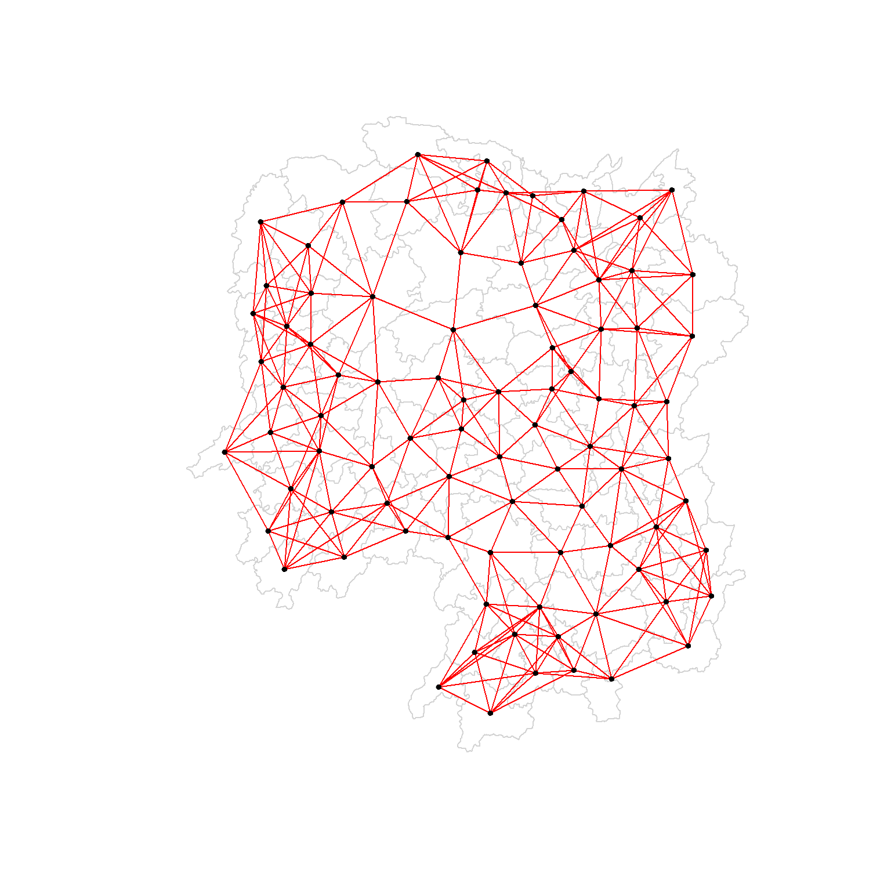
The graph is visibly more uniform than the fixed distance one: the sparse west is as densely linked as the crowded north-east, because the criterion counts neighbours rather than measuring distance.
Weights based on IDW
A third approach keeps the contiguity structure but stops treating all neighbours as equivalent, weighting each by the inverse of the distance between the two centroids so that nearer neighbours count for more.
nbdists() computes the distances between areas, and lapply() inverts them:
dist <- nbdists(wm_q, coords, longlat = TRUE)
ids <- lapply(dist, function(x) 1 / (x))The first entry corresponds to the five Queen neighbours of Anxiang seen earlier:
ids[[1]][1] 0.01535405 0.03916350 0.01820896 0.02807922 0.01145113The values are in reciprocal kilometres, so 0.0392 corresponds to a centroid roughly 26 km away and 0.0115 to one roughly 87 km away, a factor of more than three between the strongest and weakest of Anxiang’s five links, where the plain contiguity matrix would have given all five the same value.
The full set of inverse distances is:
NoteThe full inverse distance list
ids[[1]]
[1] 0.01535405 0.03916350 0.01820896 0.02807922 0.01145113
[[2]]
[1] 0.01535405 0.01764308 0.01925924 0.02323898 0.01719350
[[3]]
[1] 0.03916350 0.02822040 0.03695795 0.01395765
[[4]]
[1] 0.01820896 0.02822040 0.03414741 0.01539065
[[5]]
[1] 0.03695795 0.03414741 0.01524598 0.01618354
[[6]]
[1] 0.015390649 0.015245977 0.021748129 0.011883901 0.009810297
[[7]]
[1] 0.01708612 0.01473997 0.01150924 0.01872915
[[8]]
[1] 0.02022144 0.03453056 0.02529256 0.01036340 0.02284457 0.01500600 0.01515314
[[9]]
[1] 0.02022144 0.01574888 0.02109502 0.01508028 0.02902705 0.01502980
[[10]]
[1] 0.02281552 0.01387777 0.01538326 0.01346650 0.02100510 0.02631658 0.01874863
[8] 0.01500046
[[11]]
[1] 0.01882869 0.02243492 0.02247473
[[12]]
[1] 0.02779227 0.02419652 0.02333385 0.02986130 0.02335429
[[13]]
[1] 0.02779227 0.02650020 0.02670323 0.01714243
[[14]]
[1] 0.01882869 0.01233868 0.02098555
[[15]]
[1] 0.02650020 0.01233868 0.01096284 0.01562226
[[16]]
[1] 0.02281552 0.02466962 0.02765018 0.01476814 0.01671430
[[17]]
[1] 0.01387777 0.02243492 0.02098555 0.01096284 0.02466962 0.01593341 0.01437996
[[18]]
[1] 0.02039779 0.02032767 0.01481665 0.01473691 0.01459380
[[19]]
[1] 0.01538326 0.01926323 0.02668415 0.02140253 0.01613589 0.01412874
[[20]]
[1] 0.01346650 0.02039779 0.01926323 0.01723025 0.02153130 0.01469240 0.02327034
[[21]]
[1] 0.02668415 0.01723025 0.01766299 0.02644986 0.02163800
[[22]]
[1] 0.02100510 0.02765018 0.02032767 0.02153130 0.01489296
[[23]]
[1] 0.01481665 0.01469240 0.01401432 0.02246233 0.01880425 0.01530458 0.01849605
[[24]]
[1] 0.02354598 0.01837201 0.02607264 0.01220154 0.02514180
[[25]]
[1] 0.02354598 0.02188032 0.01577283 0.01949232 0.02947957
[[26]]
[1] 0.02155798 0.01745522 0.02212108 0.02220532
[[27]]
[1] 0.02155798 0.02490625 0.01562326
[[28]]
[1] 0.01837201 0.02188032 0.02229549 0.03076171 0.02039506
[[29]]
[1] 0.02490625 0.01686587 0.01395022
[[30]]
[1] 0.02090587
[[31]]
[1] 0.02607264 0.01577283 0.01219005 0.01724850 0.01229012 0.01609781 0.01139438
[8] 0.01150130
[[32]]
[1] 0.01220154 0.01219005 0.01712515 0.01340413 0.01280928 0.01198216 0.01053374
[8] 0.01065655
[[33]]
[1] 0.01949232 0.01745522 0.02229549 0.02090587 0.01979045
[[34]]
[1] 0.03113041 0.03589551 0.02882915
[[35]]
[1] 0.01766299 0.02185795 0.02616766 0.02111721 0.02108253 0.01509020
[[36]]
[1] 0.01724850 0.03113041 0.01571707 0.01860991 0.02073549 0.01680129
[[37]]
[1] 0.01686587 0.02234793 0.01510990 0.01550676
[[38]]
[1] 0.01401432 0.02407426 0.02276151 0.01719415
[[39]]
[1] 0.01229012 0.02172543 0.01711924 0.02629732 0.01896385
[[40]]
[1] 0.01609781 0.01571707 0.02172543 0.01506473 0.01987922 0.01894207
[[41]]
[1] 0.02246233 0.02185795 0.02205991 0.01912542 0.01601083 0.01742892
[[42]]
[1] 0.02212108 0.01562326 0.01395022 0.02234793 0.01711924 0.01836831 0.01683518
[[43]]
[1] 0.01510990 0.02629732 0.01506473 0.01836831 0.03112027 0.01530782
[[44]]
[1] 0.01550676 0.02407426 0.03112027 0.01486508
[[45]]
[1] 0.03589551 0.01860991 0.01987922 0.02205991 0.02107101 0.01982700
[[46]]
[1] 0.03453056 0.04033752 0.02689769
[[47]]
[1] 0.02529256 0.02616766 0.04033752 0.01949145 0.02181458
[[48]]
[1] 0.02313819 0.03370576 0.02289485 0.01630057 0.01818085
[[49]]
[1] 0.03076171 0.02138091 0.02394529 0.01990000
[[50]]
[1] 0.01712515 0.02313819 0.02551427 0.02051530 0.02187179
[[51]]
[1] 0.03370576 0.02138091 0.02873854
[[52]]
[1] 0.02289485 0.02394529 0.02551427 0.02873854 0.03516672
[[53]]
[1] 0.01630057 0.01979945 0.01253977
[[54]]
[1] 0.02514180 0.02039506 0.01340413 0.01990000 0.02051530 0.03516672
[[55]]
[1] 0.01280928 0.01818085 0.02187179 0.01979945 0.01882298
[[56]]
[1] 0.01036340 0.01139438 0.01198216 0.02073549 0.01214479 0.01362855 0.01341697
[[57]]
[1] 0.028079221 0.017643082 0.031423501 0.029114131 0.013520292 0.009903702
[[58]]
[1] 0.01925924 0.03142350 0.02722997 0.01434859 0.01567192
[[59]]
[1] 0.01696711 0.01265572 0.01667105 0.01785036
[[60]]
[1] 0.02419652 0.02670323 0.01696711 0.02343040
[[61]]
[1] 0.02333385 0.01265572 0.02343040 0.02514093 0.02790764 0.01219751 0.02362452
[[62]]
[1] 0.02514093 0.02002219 0.02110260
[[63]]
[1] 0.02986130 0.02790764 0.01407043 0.01805987
[[64]]
[1] 0.02911413 0.01689892
[[65]]
[1] 0.02471705
[[66]]
[1] 0.01574888 0.01726461 0.03068853 0.01954805 0.01810569
[[67]]
[1] 0.01708612 0.01726461 0.01349843 0.01361172
[[68]]
[1] 0.02109502 0.02722997 0.03068853 0.01406357 0.01546511
[[69]]
[1] 0.02174813 0.01645838 0.01419926
[[70]]
[1] 0.02631658 0.01963168 0.02278487
[[71]]
[1] 0.01473997 0.01838483 0.03197403
[[72]]
[1] 0.01874863 0.02247473 0.01476814 0.01593341 0.01963168
[[73]]
[1] 0.01500046 0.02140253 0.02278487 0.01838483 0.01652709
[[74]]
[1] 0.01150924 0.01613589 0.03197403 0.01652709 0.01342099 0.02864567
[[75]]
[1] 0.011883901 0.010533736 0.012539774 0.018822977 0.016458383 0.008217581
[[76]]
[1] 0.01352029 0.01434859 0.01689892 0.02471705 0.01954805 0.01349843 0.01406357
[[77]]
[1] 0.014736909 0.018804247 0.022761507 0.012197506 0.020022195 0.014070428
[7] 0.008440896
[[78]]
[1] 0.02323898 0.02284457 0.01508028 0.01214479 0.01567192 0.01546511 0.01140779
[[79]]
[1] 0.01530458 0.01719415 0.01894207 0.01912542 0.01530782 0.01486508 0.02107101
[[80]]
[1] 0.01500600 0.02882915 0.02111721 0.01680129 0.01601083 0.01982700 0.01949145
[8] 0.01362855
[[81]]
[1] 0.02947957 0.02220532 0.01150130 0.01979045 0.01896385 0.01683518
[[82]]
[1] 0.02327034 0.02644986 0.01849605 0.02108253 0.01742892
[[83]]
[1] 0.023354289 0.017142433 0.015622258 0.016714303 0.014379961 0.014593799
[7] 0.014892965 0.018059871 0.008440896
[[84]]
[1] 0.01872915 0.02902705 0.01810569 0.01361172 0.01342099 0.01297994
[[85]]
[1] 0.011451133 0.017193502 0.013957649 0.016183544 0.009810297 0.010656545
[7] 0.013416965 0.009903702 0.014199260 0.008217581 0.011407794
[[86]]
[1] 0.01515314 0.01502980 0.01412874 0.02163800 0.01509020 0.02689769 0.02181458
[8] 0.02864567 0.01297994
[[87]]
[1] 0.01667105 0.02362452 0.02110260 0.02058034
[[88]]
[1] 0.01785036 0.02058034Row-standardised Weights Matrix
The neighbour list says which units are linked; a weights list says how much each link counts. nb2listw() performs that conversion, and its style argument governs the rule.
Under style = "W" each neighbour of a unit receives the fraction 1 / (number of neighbours), so the weights in every row sum to one. This is the most intuitive way of summarising neighbouring values, but it carries one drawback: polygons on the edge of the study area base their lagged values on fewer neighbours, and so may over- or under-state the true spatial autocorrelation. style = "W" is used here for simplicity, with the more robust style = "B" noted as the alternative.
rswm_q <- nb2listw(wm_q, style = "W", zero.policy = TRUE)
rswm_qCharacteristics of weights list object:
Neighbour list object:
Number of regions: 88
Number of nonzero links: 448
Percentage nonzero weights: 5.785124
Average number of links: 5.090909
Weights style: W
Weights constants summary:
n nn S0 S1 S2
W 88 7744 88 37.86334 365.9147zero.policy = TRUE permits units with no neighbours at all. It warrants care, since it lets missing neighbours pass unnoticed; with zero.policy = FALSE such a case returns an error instead. Neither applies to this data set, where every county has at least one neighbour.
The weights of the tenth polygon, which has eight neighbours, are:
rswm_q$weights[10][[1]]
[1] 0.125 0.125 0.125 0.125 0.125 0.125 0.125 0.125Each neighbour carries 0.125 of the total weight, so when the average neighbouring value is computed each of the eight will be multiplied by 0.125 before being summed.
The same function derives a weights list from the inverse distances, passed through the glist argument:
rswm_ids <- nb2listw(wm_q, glist = ids, style = "B", zero.policy = TRUE)
rswm_idsCharacteristics of weights list object:
Neighbour list object:
Number of regions: 88
Number of nonzero links: 448
Percentage nonzero weights: 5.785124
Average number of links: 5.090909
Weights style: B
Weights constants summary:
n nn S0 S1 S2
B 88 7744 8.786867 0.3776535 3.8137The first row now holds the inverse distances themselves rather than equal fractions:
rswm_ids$weights[1][[1]]
[1] 0.01535405 0.03916350 0.01820896 0.02807922 0.01145113summary(unlist(rswm_ids$weights)) Min. 1st Qu. Median Mean 3rd Qu. Max.
0.008218 0.015088 0.018739 0.019614 0.022823 0.040338 style = "B" here leaves the supplied values as they are rather than rescaling them, so these rows do not sum to one, and the row sums vary with both the number and the proximity of each county’s neighbours.
Application of Spatial Weight Matrix
A weights matrix earns its keep by transforming a variable into a spatially lagged version of itself: a summary, for each unit, of the values observed around it. Four such variables are created below, and the differences between them come down to two binary choices: whether the weights are row-standardised or binary, and whether the unit itself is included among its own neighbours.
| Excludes self | Includes self | |
|---|---|---|
| Row-standardised (average) | Spatial lag with row-standardized weights | Spatial window average |
| Binary (sum) | Spatial lag as a sum of neighbouring values | Spatial window sum |
Spatial lag with row-standardized weights
lag.listw() computes the average neighbouring GDPPC for each polygon. These are the spatially lagged values:
GDPPC.lag <- lag.listw(rswm_q, hunan$GDPPC)
GDPPC.lag [1] 24847.20 22724.80 24143.25 27737.50 27270.25 21248.80 43747.00 33582.71
[9] 45651.17 32027.62 32671.00 20810.00 25711.50 30672.33 33457.75 31689.20
[17] 20269.00 23901.60 25126.17 21903.43 22718.60 25918.80 20307.00 20023.80
[25] 16576.80 18667.00 14394.67 19848.80 15516.33 20518.00 17572.00 15200.12
[33] 18413.80 14419.33 24094.50 22019.83 12923.50 14756.00 13869.80 12296.67
[41] 15775.17 14382.86 11566.33 13199.50 23412.00 39541.00 36186.60 16559.60
[49] 20772.50 19471.20 19827.33 15466.80 12925.67 18577.17 14943.00 24913.00
[57] 25093.00 24428.80 17003.00 21143.75 20435.00 17131.33 24569.75 23835.50
[65] 26360.00 47383.40 55157.75 37058.00 21546.67 23348.67 42323.67 28938.60
[73] 25880.80 47345.67 18711.33 29087.29 20748.29 35933.71 15439.71 29787.50
[81] 18145.00 21617.00 29203.89 41363.67 22259.09 44939.56 16902.00 16930.00The first entry, 24847.20, is the mean of the five GDPPC values retrieved for the neighbours of Anxiang in the earlier section, namely 20981, 34592, 24473, 21311 and 22879, each multiplied by its weight of 0.2 and summed. That is what a row-standardised spatial lag is: the neighbourhood mean, with the unit’s own value excluded.
The lagged values are appended to the hunan data frame:
lag.list <- list(hunan$NAME_3, lag.listw(rswm_q, hunan$GDPPC))
lag.res <- as.data.frame(lag.list)
colnames(lag.res) <- c("NAME_3", "lag GDPPC")
hunan <- left_join(hunan, lag.res, by = "NAME_3")head() shows the new field alongside the original:
head(hunan)Simple feature collection with 6 features and 7 fields
Geometry type: POLYGON
Dimension: XY
Bounding box: xmin: 110.4922 ymin: 28.61762 xmax: 112.3013 ymax: 30.12812
Geodetic CRS: WGS 84
NAME_2 ID_3 NAME_3 ENGTYPE_3 County GDPPC lag GDPPC
1 Changde 21098 Anxiang County Anxiang 23667 24847.20
2 Changde 21100 Hanshou County Hanshou 20981 22724.80
3 Changde 21101 Jinshi County City Jinshi 34592 24143.25
4 Changde 21102 Li County Li 24473 27737.50
5 Changde 21103 Linli County Linli 25554 27270.25
6 Changde 21104 Shimen County Shimen 27137 21248.80
geometry
1 POLYGON ((112.0625 29.75523...
2 POLYGON ((112.2288 29.11684...
3 POLYGON ((111.8927 29.6013,...
4 POLYGON ((111.3731 29.94649...
5 POLYGON ((111.6324 29.76288...
6 POLYGON ((110.8825 30.11675...Mapping GDPPC against its spatial lag shows what the operation does to the map:
gdppc <- qtm(hunan, "GDPPC")
lag_gdppc <- qtm(hunan, "lag GDPPC")
tmap_arrange(gdppc, lag_gdppc, asp = 1, ncol = 2)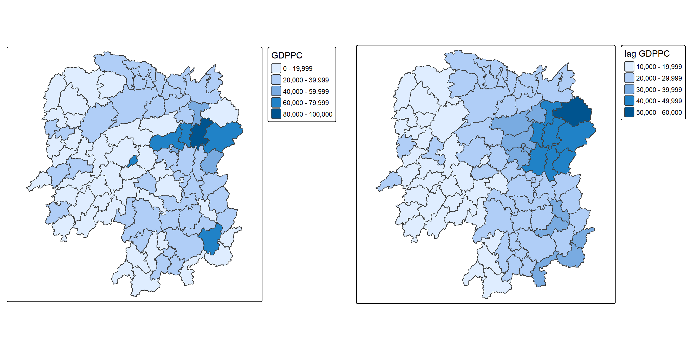
The lagged map is smoother, and the isolated high-GDPPC counties of the original are pulled towards their surroundings. Spatial lagging is a spatial smoother, which is exactly why comparing a value to its lag is the basis of the autocorrelation statistics that follow in later exercises.
Spatial lag as a sum of neighboring values
Summing rather than averaging requires binary weights. The neighbours structure is returned to, a function assigning a value of 1 to each neighbour is applied across it with lapply(), and the result is passed to nb2listw() through glist =:
b_weights <- lapply(wm_q, function(x) 0 * x + 1)
b_weights2 <- nb2listw(wm_q,
glist = b_weights,
style = "B")
b_weights2Characteristics of weights list object:
Neighbour list object:
Number of regions: 88
Number of nonzero links: 448
Percentage nonzero weights: 5.785124
Average number of links: 5.090909
Weights style: B
Weights constants summary:
n nn S0 S1 S2
B 88 7744 448 896 10224With binary weights in place, lag.listw() computes the lag as before:
lag_sum <- list(hunan$NAME_3, lag.listw(b_weights2, hunan$GDPPC))
lag.res <- as.data.frame(lag_sum)
colnames(lag.res) <- c("NAME_3", "lag_sum GDPPC")The result, paired with the county names:
lag_sum[[1]]
[1] "Anxiang" "Hanshou" "Jinshi" "Li"
[5] "Linli" "Shimen" "Liuyang" "Ningxiang"
[9] "Wangcheng" "Anren" "Guidong" "Jiahe"
[13] "Linwu" "Rucheng" "Yizhang" "Yongxing"
[17] "Zixing" "Changning" "Hengdong" "Hengnan"
[21] "Hengshan" "Leiyang" "Qidong" "Chenxi"
[25] "Zhongfang" "Huitong" "Jingzhou" "Mayang"
[29] "Tongdao" "Xinhuang" "Xupu" "Yuanling"
[33] "Zhijiang" "Lengshuijiang" "Shuangfeng" "Xinhua"
[37] "Chengbu" "Dongan" "Dongkou" "Longhui"
[41] "Shaodong" "Suining" "Wugang" "Xinning"
[45] "Xinshao" "Shaoshan" "Xiangxiang" "Baojing"
[49] "Fenghuang" "Guzhang" "Huayuan" "Jishou"
[53] "Longshan" "Luxi" "Yongshun" "Anhua"
[57] "Nan" "Yuanjiang" "Jianghua" "Lanshan"
[61] "Ningyuan" "Shuangpai" "Xintian" "Huarong"
[65] "Linxiang" "Miluo" "Pingjiang" "Xiangyin"
[69] "Cili" "Chaling" "Liling" "Yanling"
[73] "You" "Zhuzhou" "Sangzhi" "Yueyang"
[77] "Qiyang" "Taojiang" "Shaoyang" "Lianyuan"
[81] "Hongjiang" "Hengyang" "Guiyang" "Changsha"
[85] "Taoyuan" "Xiangtan" "Dao" "Jiangyong"
[[2]]
[1] 124236 113624 96573 110950 109081 106244 174988 235079 273907 256221
[11] 98013 104050 102846 92017 133831 158446 141883 119508 150757 153324
[21] 113593 129594 142149 100119 82884 74668 43184 99244 46549 20518
[31] 140576 121601 92069 43258 144567 132119 51694 59024 69349 73780
[41] 94651 100680 69398 52798 140472 118623 180933 82798 83090 97356
[51] 59482 77334 38777 111463 74715 174391 150558 122144 68012 84575
[61] 143045 51394 98279 47671 26360 236917 220631 185290 64640 70046
[71] 126971 144693 129404 284074 112268 203611 145238 251536 108078 238300
[81] 108870 108085 262835 248182 244850 404456 67608 33860Anxiang’s entry is 124236, which is the sum of the same five neighbouring values that averaged to 24847.20. The consequence is that this variable confounds two things: how wealthy the neighbours are, and how many of them there are. A county with eleven modest neighbours outranks one with two prosperous neighbours.
The field is appended to the data frame:
hunan <- left_join(hunan, lag.res, by = "NAME_3")gdppc <- qtm(hunan, "GDPPC")
lag_sum_gdppc <- qtm(hunan, "lag_sum GDPPC")
tmap_arrange(gdppc, lag_sum_gdppc, asp = 1, ncol = 2)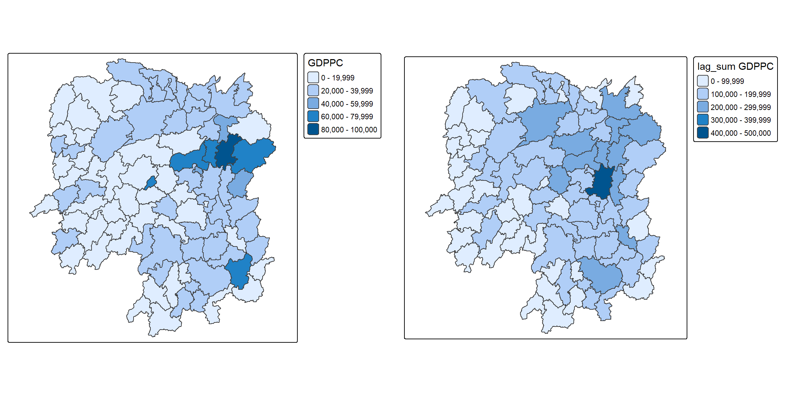
Spatial window average
The spatial window average uses row-standardised weights and includes the diagonal element, which is to say it treats each county as one of its own neighbours. The neighbours structure is returned to and the diagonal added before weights are assigned, using include.self() of spdep:
wm_qs <- include.self(wm_q)The number of nonzero links, percentage nonzero weights and average number of links are now 536, 6.921488 and 6.090909, against 448, 5.785124 and 5.090909 for wm_q. The increase is exactly 88 links, one per county.
The neighbour list of the first area confirms it:
wm_qs[[1]][1] 1 2 3 4 57 85Area 1 now has six neighbours instead of five, the extra one being itself. Weights follow from nb2listw():
wm_qs_w <- nb2listw(wm_qs)
wm_qs_wCharacteristics of weights list object:
Neighbour list object:
Number of regions: 88
Number of nonzero links: 536
Percentage nonzero weights: 6.921488
Average number of links: 6.090909
Weights style: W
Weights constants summary:
n nn S0 S1 S2
W 88 7744 88 30.90265 357.5308The listw object is given its own name rather than overwriting wm_qs, so the neighbour list with the diagonal remains available for reuse in the next section.
The lag variable is then created from the weight structure and the GDPPC variable:
lag_w_avg_gdppc <- lag.listw(wm_qs_w, hunan$GDPPC)
lag_w_avg_gdppc [1] 24650.50 22434.17 26233.00 27084.60 26927.00 22230.17 47621.20 37160.12
[9] 49224.71 29886.89 26627.50 22690.17 25366.40 25825.75 30329.00 32682.83
[17] 25948.62 23987.67 25463.14 21904.38 23127.50 25949.83 20018.75 19524.17
[25] 18955.00 17800.40 15883.00 18831.33 14832.50 17965.00 17159.89 16199.44
[33] 18764.50 26878.75 23188.86 20788.14 12365.20 15985.00 13764.83 11907.43
[41] 17128.14 14593.62 11644.29 12706.00 21712.29 43548.25 35049.00 16226.83
[49] 19294.40 18156.00 19954.75 18145.17 12132.75 18419.29 14050.83 23619.75
[57] 24552.71 24733.67 16762.60 20932.60 19467.75 18334.00 22541.00 26028.00
[65] 29128.50 46569.00 47576.60 36545.50 20838.50 22531.00 42115.50 27619.00
[73] 27611.33 44523.29 18127.43 28746.38 20734.50 33880.62 14716.38 28516.22
[81] 18086.14 21244.50 29568.80 48119.71 22310.75 43151.60 17133.40 17009.33The lag variable is converted into a data frame with as.data.frame(), and the field names set to NAME_3 and lag_window_avg GDPPC:
lag.list.wm_qs <- list(hunan$NAME_3, lag.listw(wm_qs_w, hunan$GDPPC))
lag_wm_qs.res <- as.data.frame(lag.list.wm_qs)
colnames(lag_wm_qs.res) <- c("NAME_3", "lag_window_avg GDPPC")left_join() appends the values to the hunan data frame:
hunan <- left_join(hunan, lag_wm_qs.res, by = "NAME_3")kable() of knitr prepares a table comparing the two row-standardised variables. The geometry column is dropped first, since a list column of polygons in a printed table is unreadable:
hunan %>%
st_drop_geometry() %>%
select("County",
"lag GDPPC",
"lag_window_avg GDPPC") %>%
kable()| County | lag GDPPC | lag_window_avg GDPPC |
|---|---|---|
| Anxiang | 24847.20 | 24650.50 |
| Hanshou | 22724.80 | 22434.17 |
| Jinshi | 24143.25 | 26233.00 |
| Li | 27737.50 | 27084.60 |
| Linli | 27270.25 | 26927.00 |
| Shimen | 21248.80 | 22230.17 |
| Liuyang | 43747.00 | 47621.20 |
| Ningxiang | 33582.71 | 37160.12 |
| Wangcheng | 45651.17 | 49224.71 |
| Anren | 32027.62 | 29886.89 |
| Guidong | 32671.00 | 26627.50 |
| Jiahe | 20810.00 | 22690.17 |
| Linwu | 25711.50 | 25366.40 |
| Rucheng | 30672.33 | 25825.75 |
| Yizhang | 33457.75 | 30329.00 |
| Yongxing | 31689.20 | 32682.83 |
| Zixing | 20269.00 | 25948.62 |
| Changning | 23901.60 | 23987.67 |
| Hengdong | 25126.17 | 25463.14 |
| Hengnan | 21903.43 | 21904.38 |
| Hengshan | 22718.60 | 23127.50 |
| Leiyang | 25918.80 | 25949.83 |
| Qidong | 20307.00 | 20018.75 |
| Chenxi | 20023.80 | 19524.17 |
| Zhongfang | 16576.80 | 18955.00 |
| Huitong | 18667.00 | 17800.40 |
| Jingzhou | 14394.67 | 15883.00 |
| Mayang | 19848.80 | 18831.33 |
| Tongdao | 15516.33 | 14832.50 |
| Xinhuang | 20518.00 | 17965.00 |
| Xupu | 17572.00 | 17159.89 |
| Yuanling | 15200.12 | 16199.44 |
| Zhijiang | 18413.80 | 18764.50 |
| Lengshuijiang | 14419.33 | 26878.75 |
| Shuangfeng | 24094.50 | 23188.86 |
| Xinhua | 22019.83 | 20788.14 |
| Chengbu | 12923.50 | 12365.20 |
| Dongan | 14756.00 | 15985.00 |
| Dongkou | 13869.80 | 13764.83 |
| Longhui | 12296.67 | 11907.43 |
| Shaodong | 15775.17 | 17128.14 |
| Suining | 14382.86 | 14593.62 |
| Wugang | 11566.33 | 11644.29 |
| Xinning | 13199.50 | 12706.00 |
| Xinshao | 23412.00 | 21712.29 |
| Shaoshan | 39541.00 | 43548.25 |
| Xiangxiang | 36186.60 | 35049.00 |
| Baojing | 16559.60 | 16226.83 |
| Fenghuang | 20772.50 | 19294.40 |
| Guzhang | 19471.20 | 18156.00 |
| Huayuan | 19827.33 | 19954.75 |
| Jishou | 15466.80 | 18145.17 |
| Longshan | 12925.67 | 12132.75 |
| Luxi | 18577.17 | 18419.29 |
| Yongshun | 14943.00 | 14050.83 |
| Anhua | 24913.00 | 23619.75 |
| Nan | 25093.00 | 24552.71 |
| Yuanjiang | 24428.80 | 24733.67 |
| Jianghua | 17003.00 | 16762.60 |
| Lanshan | 21143.75 | 20932.60 |
| Ningyuan | 20435.00 | 19467.75 |
| Shuangpai | 17131.33 | 18334.00 |
| Xintian | 24569.75 | 22541.00 |
| Huarong | 23835.50 | 26028.00 |
| Linxiang | 26360.00 | 29128.50 |
| Miluo | 47383.40 | 46569.00 |
| Pingjiang | 55157.75 | 47576.60 |
| Xiangyin | 37058.00 | 36545.50 |
| Cili | 21546.67 | 20838.50 |
| Chaling | 23348.67 | 22531.00 |
| Liling | 42323.67 | 42115.50 |
| Yanling | 28938.60 | 27619.00 |
| You | 25880.80 | 27611.33 |
| Zhuzhou | 47345.67 | 44523.29 |
| Sangzhi | 18711.33 | 18127.43 |
| Yueyang | 29087.29 | 28746.38 |
| Qiyang | 20748.29 | 20734.50 |
| Taojiang | 35933.71 | 33880.62 |
| Shaoyang | 15439.71 | 14716.38 |
| Lianyuan | 29787.50 | 28516.22 |
| Hongjiang | 18145.00 | 18086.14 |
| Hengyang | 21617.00 | 21244.50 |
| Guiyang | 29203.89 | 29568.80 |
| Changsha | 41363.67 | 48119.71 |
| Taoyuan | 22259.09 | 22310.75 |
| Xiangtan | 44939.56 | 43151.60 |
| Dao | 16902.00 | 17133.40 |
| Jiangyong | 16930.00 | 17009.33 |
The two columns differ by exactly the pull of each county’s own value: where a county is richer than its surroundings the window average is higher than the plain lag, and where it is poorer the window average is lower. Changsha, at 41363.67 against 48119.71, is the clearest case in the table.
Finally the two maps are placed side by side:
w_avg_gdppc <- qtm(hunan, "lag_window_avg GDPPC")
tmap_arrange(lag_gdppc, w_avg_gdppc, asp = 1, ncol = 2)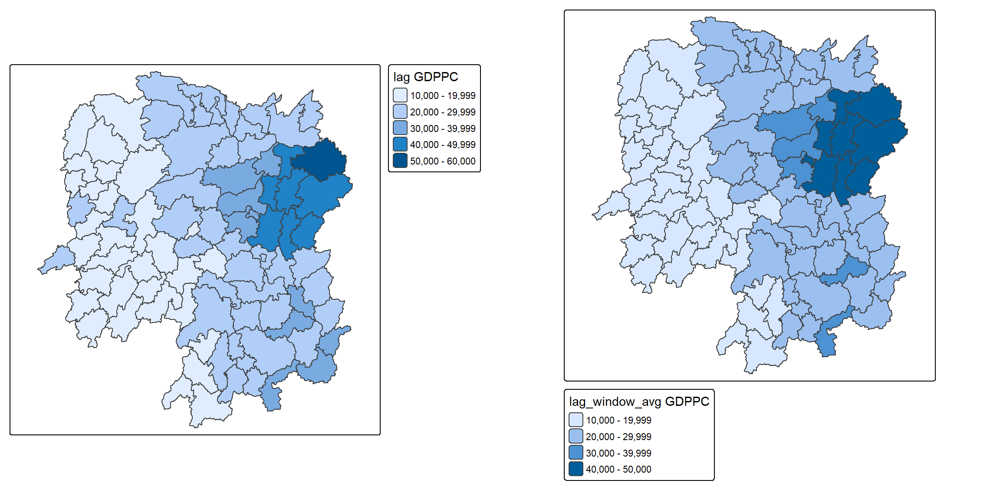
qtm() is used here for speed of comparison. Because each call chooses its own class breaks, the two maps are not strictly comparable at the level of individual colours; the core tmap functions with a shared fill.scale would be the more effective choice for a published figure.
Spatial window sum
The spatial window sum is the counterpart of the window average, without row standardisation. The diagonal element is again added with include.self():
wm_qs <- include.self(wm_q)
wm_qsNeighbour list object:
Number of regions: 88
Number of nonzero links: 536
Percentage nonzero weights: 6.921488
Average number of links: 6.090909 Binary weights are assigned to the neighbour structure that includes the diagonal:
b_weights <- lapply(wm_qs, function(x) 0 * x + 1)
b_weights[1][[1]]
[1] 1 1 1 1 1 1Area 1 again has six neighbours instead of five, so six weights of 1. The values are assigned explicitly through glist:
b_weights2 <- nb2listw(wm_qs,
glist = b_weights,
style = "B")
b_weights2Characteristics of weights list object:
Neighbour list object:
Number of regions: 88
Number of nonzero links: 536
Percentage nonzero weights: 6.921488
Average number of links: 6.090909
Weights style: B
Weights constants summary:
n nn S0 S1 S2
B 88 7744 536 1072 14160lag.listw() computes the lag variable with the new weight structure:
w_sum_gdppc <- list(hunan$NAME_3, lag.listw(b_weights2, hunan$GDPPC))
w_sum_gdppc[[1]]
[1] "Anxiang" "Hanshou" "Jinshi" "Li"
[5] "Linli" "Shimen" "Liuyang" "Ningxiang"
[9] "Wangcheng" "Anren" "Guidong" "Jiahe"
[13] "Linwu" "Rucheng" "Yizhang" "Yongxing"
[17] "Zixing" "Changning" "Hengdong" "Hengnan"
[21] "Hengshan" "Leiyang" "Qidong" "Chenxi"
[25] "Zhongfang" "Huitong" "Jingzhou" "Mayang"
[29] "Tongdao" "Xinhuang" "Xupu" "Yuanling"
[33] "Zhijiang" "Lengshuijiang" "Shuangfeng" "Xinhua"
[37] "Chengbu" "Dongan" "Dongkou" "Longhui"
[41] "Shaodong" "Suining" "Wugang" "Xinning"
[45] "Xinshao" "Shaoshan" "Xiangxiang" "Baojing"
[49] "Fenghuang" "Guzhang" "Huayuan" "Jishou"
[53] "Longshan" "Luxi" "Yongshun" "Anhua"
[57] "Nan" "Yuanjiang" "Jianghua" "Lanshan"
[61] "Ningyuan" "Shuangpai" "Xintian" "Huarong"
[65] "Linxiang" "Miluo" "Pingjiang" "Xiangyin"
[69] "Cili" "Chaling" "Liling" "Yanling"
[73] "You" "Zhuzhou" "Sangzhi" "Yueyang"
[77] "Qiyang" "Taojiang" "Shaoyang" "Lianyuan"
[81] "Hongjiang" "Hengyang" "Guiyang" "Changsha"
[85] "Taoyuan" "Xiangtan" "Dao" "Jiangyong"
[[2]]
[1] 147903 134605 131165 135423 134635 133381 238106 297281 344573 268982
[11] 106510 136141 126832 103303 151645 196097 207589 143926 178242 175235
[21] 138765 155699 160150 117145 113730 89002 63532 112988 59330 35930
[31] 154439 145795 112587 107515 162322 145517 61826 79925 82589 83352
[41] 119897 116749 81510 63530 151986 174193 210294 97361 96472 108936
[51] 79819 108871 48531 128935 84305 188958 171869 148402 83813 104663
[61] 155742 73336 112705 78084 58257 279414 237883 219273 83354 90124
[71] 168462 165714 165668 311663 126892 229971 165876 271045 117731 256646
[81] 126603 127467 295688 336838 267729 431516 85667 51028The lag variable is converted into a data frame and the fields renamed:
w_sum_gdppc.res <- as.data.frame(w_sum_gdppc)
colnames(w_sum_gdppc.res) <- c("NAME_3", "w_sum GDPPC")left_join() appends the values to the hunan data frame:
hunan <- left_join(hunan, w_sum_gdppc.res, by = "NAME_3")kable() prepares the comparison between the two binary variables:
hunan %>%
st_drop_geometry() %>%
select("County", "lag_sum GDPPC", "w_sum GDPPC") %>%
kable()| County | lag_sum GDPPC | w_sum GDPPC |
|---|---|---|
| Anxiang | 124236 | 147903 |
| Hanshou | 113624 | 134605 |
| Jinshi | 96573 | 131165 |
| Li | 110950 | 135423 |
| Linli | 109081 | 134635 |
| Shimen | 106244 | 133381 |
| Liuyang | 174988 | 238106 |
| Ningxiang | 235079 | 297281 |
| Wangcheng | 273907 | 344573 |
| Anren | 256221 | 268982 |
| Guidong | 98013 | 106510 |
| Jiahe | 104050 | 136141 |
| Linwu | 102846 | 126832 |
| Rucheng | 92017 | 103303 |
| Yizhang | 133831 | 151645 |
| Yongxing | 158446 | 196097 |
| Zixing | 141883 | 207589 |
| Changning | 119508 | 143926 |
| Hengdong | 150757 | 178242 |
| Hengnan | 153324 | 175235 |
| Hengshan | 113593 | 138765 |
| Leiyang | 129594 | 155699 |
| Qidong | 142149 | 160150 |
| Chenxi | 100119 | 117145 |
| Zhongfang | 82884 | 113730 |
| Huitong | 74668 | 89002 |
| Jingzhou | 43184 | 63532 |
| Mayang | 99244 | 112988 |
| Tongdao | 46549 | 59330 |
| Xinhuang | 20518 | 35930 |
| Xupu | 140576 | 154439 |
| Yuanling | 121601 | 145795 |
| Zhijiang | 92069 | 112587 |
| Lengshuijiang | 43258 | 107515 |
| Shuangfeng | 144567 | 162322 |
| Xinhua | 132119 | 145517 |
| Chengbu | 51694 | 61826 |
| Dongan | 59024 | 79925 |
| Dongkou | 69349 | 82589 |
| Longhui | 73780 | 83352 |
| Shaodong | 94651 | 119897 |
| Suining | 100680 | 116749 |
| Wugang | 69398 | 81510 |
| Xinning | 52798 | 63530 |
| Xinshao | 140472 | 151986 |
| Shaoshan | 118623 | 174193 |
| Xiangxiang | 180933 | 210294 |
| Baojing | 82798 | 97361 |
| Fenghuang | 83090 | 96472 |
| Guzhang | 97356 | 108936 |
| Huayuan | 59482 | 79819 |
| Jishou | 77334 | 108871 |
| Longshan | 38777 | 48531 |
| Luxi | 111463 | 128935 |
| Yongshun | 74715 | 84305 |
| Anhua | 174391 | 188958 |
| Nan | 150558 | 171869 |
| Yuanjiang | 122144 | 148402 |
| Jianghua | 68012 | 83813 |
| Lanshan | 84575 | 104663 |
| Ningyuan | 143045 | 155742 |
| Shuangpai | 51394 | 73336 |
| Xintian | 98279 | 112705 |
| Huarong | 47671 | 78084 |
| Linxiang | 26360 | 58257 |
| Miluo | 236917 | 279414 |
| Pingjiang | 220631 | 237883 |
| Xiangyin | 185290 | 219273 |
| Cili | 64640 | 83354 |
| Chaling | 70046 | 90124 |
| Liling | 126971 | 168462 |
| Yanling | 144693 | 165714 |
| You | 129404 | 165668 |
| Zhuzhou | 284074 | 311663 |
| Sangzhi | 112268 | 126892 |
| Yueyang | 203611 | 229971 |
| Qiyang | 145238 | 165876 |
| Taojiang | 251536 | 271045 |
| Shaoyang | 108078 | 117731 |
| Lianyuan | 238300 | 256646 |
| Hongjiang | 108870 | 126603 |
| Hengyang | 108085 | 127467 |
| Guiyang | 262835 | 295688 |
| Changsha | 248182 | 336838 |
| Taoyuan | 244850 | 267729 |
| Xiangtan | 404456 | 431516 |
| Dao | 67608 | 85667 |
| Jiangyong | 33860 | 51028 |
Here the difference between the two columns is not a pull but an addition: the window sum exceeds the plain sum by precisely the county’s own GDPPC, for every row in the table.
w_sum_gdppc <- qtm(hunan, "w_sum GDPPC")
tmap_arrange(lag_sum_gdppc, w_sum_gdppc, asp = 1, ncol = 2)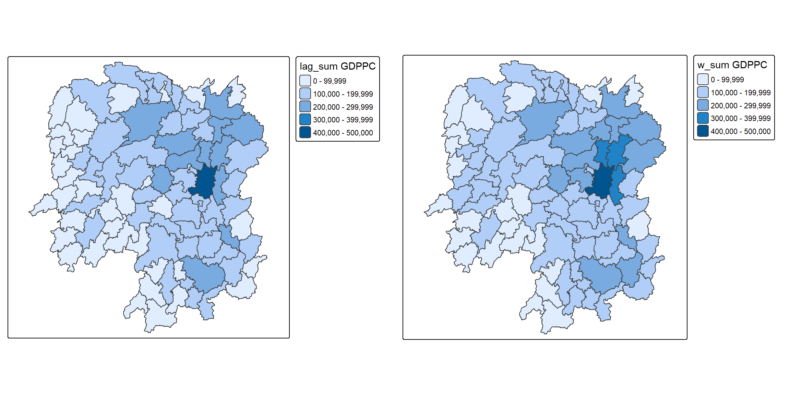
Reference
- Kam, T. S. R for Geospatial Data Science and Analytics, Chapter 8: Spatial Weights and Applications.
- Bivand, R. S. and Wong, D. W. S. (2018) “Comparing implementations of global and local indicators of spatial association”, TEST, Vol. 27, pp. 716-748.
- Creating Neighbours, the spdep vignette on building neighbour lists from
sfobjects. - spdep: Spatial Dependence - Weighting Schemes, Statistics